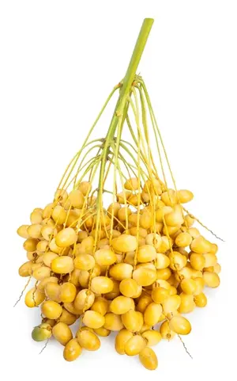
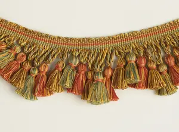

ⲗⲁⲩ F v ⲗⲟⲟⲩ.


| ⲟⲓ ⲛⲗ. B | be fringed4118 | Crum: 148b | |||||||
ⲗⲁⲩ F v ⲗⲟⲟⲩ.
ⲗⲟⲟⲩ, ⲗⲟⲟⲩⲉ S, ⲗⲱⲟⲩ SB, ⲗⲁⲁⲩ, ⲗⲁⲩ S, ⲗⲁⲩ BF, nn m, a curl of hair: Jud 16 13 S σειρά var βό(σ)τρυχος, JA '75 5 259 = R 1 2 37 S woman wearing ϩⲉⲛⲗ. (var ⲗⲁⲩ) on head, BM 293 S ⲛⲉⲗ. ⲛⲃⲱ of head & beard, JTS 10 397 S ⲙⲡⲉⲥϯ ⲛϩⲉⲛⲗⲟⲟⲩⲉ on her head; cf R 1 3 81 S ⲛⲉⲗⲟⲟⲗⲉ of (Salome's) head dropped upon cheeks as eggs fallen from nest (as if ⲉⲗ. cluster of curls βότρυς, ? confused with ⲗ.). ring, link in chain: MG 25 143 B ⲗ. of gold, silver, iron composing chain. b fringe (tasselled ?): Ex 28 33 B λῶμα, Deu 22 12 S (B ⲑⲱϯ) στρεπτός; Ps 44 13 S (B ϣⲧⲁϯ) κροσσωτός; Is 3 16 S (Mor 43 251, elsewhere ϣⲧⲏⲛ) χιτών; Mt 14 36 F (S ⲧⲟⲡ, B do) κράσπεδον; ShIF 67 S ϩⲉⲛⲧⲱⲱⲧⲉ ⲏ ϩⲉⲛⲗⲁⲁⲩ ϩⲛⲛⲧⲟⲡ (on Nu 15 38), Mor l c 252 ⲛⲟϭ ⲛⲧⲱⲧⲉ ⲛⲗ. on heads, ib who putteth ϩⲉⲛⲗ. on head round about face, Ryl 244 S list of clothing ⲟⲩⲗ. ⲛⲡⲁⲗⲙⲉⲛⲏⲛ (?) of goat's hair (αἴγειον). ⲟⲓ ⲛⲗ. B, be fringed: Ex 28 4 κοσυμβωτός. c bunch, cluster of dates: Lev 23 40 S ⲗ. ⲛⲃⲛⲛⲉ (var ⲃⲏⲧ ϩⲁⲧ) gloss on κάλλυνθρον, P 44 96 S, K 177 B عرجون (but v ⲁⲗⲱⲟⲩⲉ), BMar 208 S twelve ⲗ. ⲛⲃⲛⲛⲉ yearly = Mor 48 10 ⲕⲗⲁⲇⲟⲥ ⲛⲃ. = Rec 6 171 B ⲥⲡⲁⲑⲓ, BMis 562 S 10,000 dates on each ⲗⲱⲟⲩ, BAp 142 S how many ⲗⲱⲟⲩ to each palm, how many dates (ⲃⲗⲃⲓⲗⲉ) to each tree or (ⲏ) each ⲗ.?, Mor 37 151 S palm called ⲛⲕⲓⲛⲟⲛ bearing 1 ⲗ. at a time. In Aeg 26 S ⲗⲟⲟⲩⲉ (B ⲃⲟⲩϩⲓ) prob = ⲁⲗⲟⲟⲩⲉ, v ⲁⲗⲱ pupil.
| view | ϣⲕⲓⲗ SF ϣⲕⲏⲗ S | (noun) curl of hair [βοστρυχος ελατος, πλοκαμος]1875 |
| view | ϫⲓϫⲱⲓ, ϭⲓϫⲱⲓ S ϫⲓϭⲱⲓ B | (noun) single lock or plait of hair left on head [σισοη]2501 |
| view | ϥⲱ, ⲃⲱ, ⲟⲩⲱ S ϥⲱⲉ SSaLB ϥⲟⲩⲉ A ⲃⲱⲉ, ⲃⲟ (?) L ϥⲱⲓ BF ⲃⲱⲉⲓ (?), ⲃⲱⲱⲓ, ϥⲱⲟⲩ, ϥⲟⲩⲱ⸗ F ϥⲟⲩϩⲉ NH | (noun male) hair [τριξ, τριχωμα, κομη, πλοκιον, κορυφη]985 |
| view | ϫⲟⲕ SA ϫⲁⲕ S | (noun male) hair of man or beast2377 |
| view | ⲥⲙⲁϩ SAB ⲥⲙⲉϩ BF | (noun male) bunch of fruit, flowers [βοτρυς]1433 |
| view | ⲁⲗⲱⲟⲩⲉ S ⲁⲗⲱⲟⲩ, ⲁⲗⲱⲟⲩⲓ B | (plural) bunch of grapes436 |
| view | ⲥⲱⲃⲉ, ⲥⲱⲡⲉ S ⲥⲱⲡⲓ B | (noun female) edge, fringe of garment &c1375 |
| view | ϣⲧⲁϯ, ϣⲑⲁϯ B | (noun male) edge, border of garment [κροσσος, κρασπεδον, ακρον]1997 |
| view | ⲧⲱⲧⲉ, ⲧⲱⲱⲧⲉ, ⲧⲟⲧⲉ S ⲑⲱϯ B | (noun female) (B once), border, fringe of garment [κρασπεδον]1660 |
| view | ⲧⲟⲡ, ⲧⲱⲡ S ⲧⲁⲡ SfA ⲧⲟⲃ B | (noun male) edge, end, border of
garment [κρασπεδον, πτερυγιον]
fold, bosom S,A [κολπος]1614 |
| view | ϣⲟⲗ SB ϣⲁⲗ SLF | (noun male) bundle [δεσμη]1887 |
| view | ⲝⲟⲩⲣ, ⲕⲥⲟⲩⲣ, ϭⲥⲟⲩⲣ S ϣϭⲟⲩⲣ B | (noun male) finger-ring [δακτυλιος]
as key [δακτυλοκλειδιον] other rings870 |
| view | plural: ⲣⲁⲙⲡⲉⲓ, ⲣⲁⲙⲡⲓ, ⲣⲁⲛⲡⲓ S | (noun) ring [δακτυλιος]1327 |
| view | ϩⲁⲗⲁⲕ SB ϩⲁⲗⲉⲕ SfF ϩⲁⲗⲏⲕ S ⲁⲗⲁⲕ SB | (noun female) ring [ξαλις, ξελλιον, κρικος]2152 |
| view | ⲁⲣⲁ B | (noun male) door-ring2684 |
| view |
|
|
||||||||||||||||||||||||